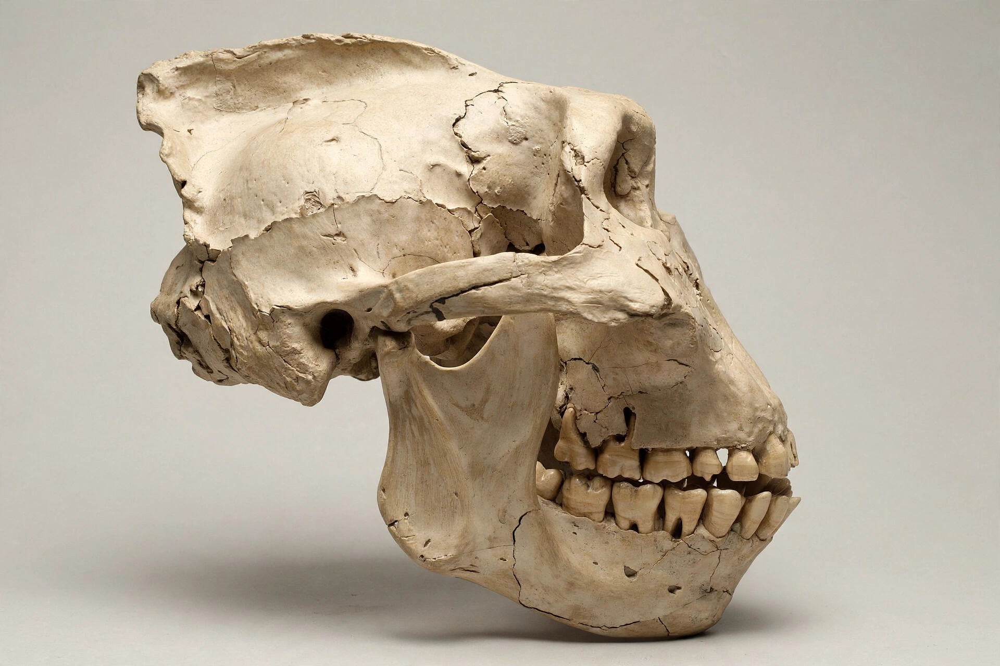

From Wikipedia, the free encyclopedia
| Paranthropus | |
|---|---|
 Skull of P. boisei (OH 5, "Nutcracker Man") | |
| Temporal range | Pliocene–Pleistocene, ~2.7–1.0 million years ago |
| Species | P. aethiopicus, P. boisei, P. robustus |
| Order / Family | Primates / Hominidae |
| Key traits | Massive jaws and molars, sagittal crest, small brain (~410–530 cc) |
Paranthropus is a genus of extinct hominins that lived in Africa from about 2.7 million to about 1 million years ago. Often called the "robust australopithecines", they are characterised by powerful chewing apparatus — enormous molars and premolars, thick enamel, deep jaws and, in males, a sagittal crest anchoring large jaw muscles — combined with a brain little bigger than that of earlier australopithecines. Whether they form a natural genus or should be folded back into Australopithecus remains debated; either way they represent a specialised side branch, not ancestors of modern humans.
Robert Broom coined the genus name (meaning "beside man") in 1938.
Paranthropus stood roughly 1.1–1.4 m tall, walked bipedally, and had postcanine teeth among the largest of any primate relative to body size. Microwear and isotope studies suggest P. boisei fed heavily on grasses or sedges (a C4 diet) — a grazing-like niche unique among hominins — while P. robustus ate a mixed diet including hard objects in lean seasons. Bone tools from Swartkrans attributed to P. robustus suggest digging for termites or tubers. Fossil sites are dated largely by argon–argon dating of volcanic layers.
The robust lineage coexisted with early Homo for over a million years but disappeared around 1 million years ago, possibly because its dietary specialisation could not track climate-driven habitat change as flexibly as the more generalised Homo.